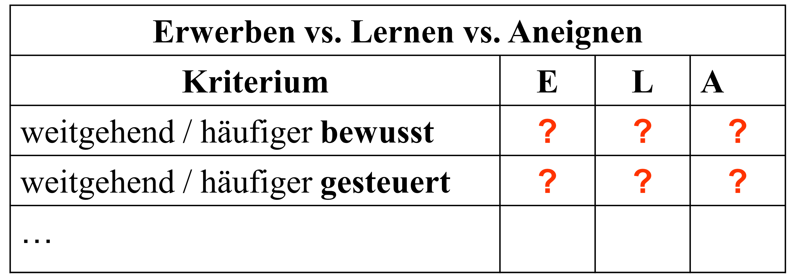
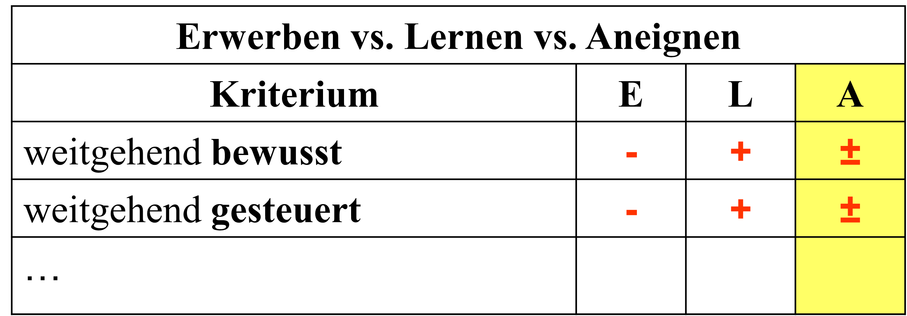
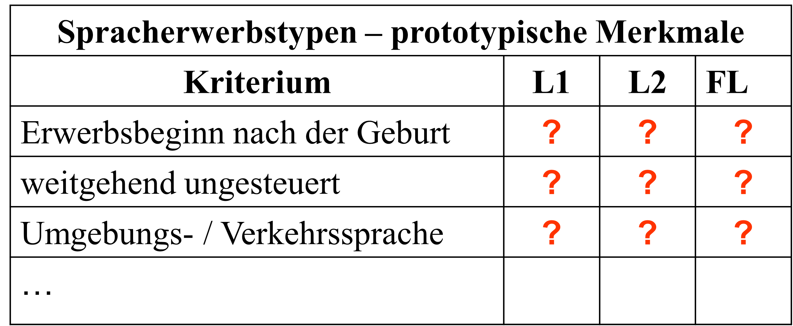
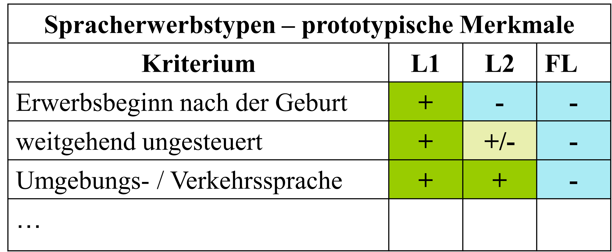

3 Spracherwerbstypen
3.1 Terminologische Unterscheidung
In der Sprachewerbsforschung ist es möglich und üblich, verschiedene Verben und Nomina zu verwenden, um auf verschiedene Spracherwerbstypen Bezug zu nehmen.
Verben: (eine Sprache) erwerben, sich (eine Sprache) aneignen, (eine Sprache) lernen.
Nomina: der Erwerb einer Sprache, die Aneignung einer Sprache, das Lernen einer Sprache.
Welche semantischen Unterschiede bestehen zwischen den genannten Verben und Nomina?
Vorschlag: Schauen Sie mal im DWDS https://www.dwds.de/ nach und versuchen Sie festzustellen, in welchen Kontexten die Verben / Nomina vorkommen!
Vergleichen Sie die Bedeutungen auch mit den Bedeutungen entsprechender slowenischer und englischer Ausdrücke:
Slowenisch: pridobiti (jezik), usvojiti (jezik), se učiti (jezika).
Englisch: acquire, learn (a language), …

Aneignung (A) soll als Oberbegriff für Erwerb und Lernen dienen. Die Aneignung einer Erstsprache ist stärker von Erwerbsprozessen geprägt. Die Aneignung einer Fremdsprache ist stärker von Lernprozessen geprägt. Die Aneignung einer Zweitsprache (im engeren Sinne) ist je nach Fall stärker von Erwerbs- bzw. Lernprozessen geprägt.

Ihnen werden nun ein paar Videoausschnitte gezeigt, in denen die Art und Weise beschrieben wird, wie sich Menschen eine Sprache aneignen.
Versuchen Sie, die wesentlichen Unterschiede und eventuelle Gemeinsamkeiten herauszufinden !
Easy German (Dauer: 11:07 Minuten):
3.2 Unterscheidungskriterien
Wir können eine Reihe von Kriterien verwenden, um drei Spracherwerbstypen zu unterscheiden.
L1 steht für Erstsprache (oft auch als Muttersprache bezeichnet), L2 bezieht sich auf die Zweitsprache und
FL wird in der Tabelle für Fremdsprache verwendet.
Der Ausdruck Muttersprache ist bei bilingualen (d.h. zweisprachigen) Personen nicht unbedingt zutreffend (warum?), darum ist Erstsprache als Fachterminus zu bevorzugen.

Ihnen werden nun ein paar Videoausschnitte gezeigt, in denen die Art und Weise beschrieben wird, wie sich Menschen eine Sprache aneignen.
Versuchen Sie, die wesentlichen Unterschiede und eventuelle Gemeinsamkeiten herauszufinden !
Easy German (Dauer: 8:46 Minuten):

In der Forschungsliteratur wird der Begriff Zweitspracherwerb
im engeren Sinne (wie in der zuvor gezeigten Tabelle),
bisweilen aber auch im weiteren Sinne verwendet.
Im zweiten Fall werden Fremdspracherwerb und Zweitspracherwerb (im engeren Sinne) als Zweitspracherwerb zusammengefasst. Welche wichtige Gemeinsamkeit ist dafür wohl ausschlaggebend ?
Der Erstspracherwerb kann auch in der Form eines doppelten Erstspracherwerbs (oder mehrfachen L1-Erwerbs) vorkommen.
Im Fall von bilingulaen Personen ist es auch aus neurobiologischer Perspektive sinnvoll, zwischen frühem und späten Bilingualismus zu unterscheiden.